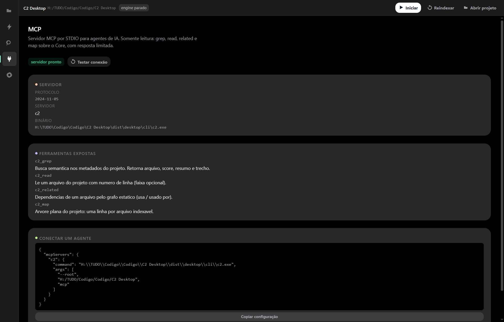

Contexto desperdiçado
Ler arquivos para descobrir a arquitetura consome a janela antes da tarefa começar.
O C2 lê o código uma vez e grava, ao lado de cada arquivo, um metadado com o que é, por que existe, o que garante e do que depende. Agentes consultam esse índice antes de abrir arquivos: menos tokens, menos erro, menos releitura.
Windows 10/11 · roda na sua máquina · sem embeddings · sem banco de dados
$ c2 status Arquivos: 132 Metadados: 127 Pendentes: 5 Runtime: parado $ c2 grep "onde valida o limite de estoque" --limit 2 1. src/mod00/arquivo_001.rs 10.20 Servico2 struct e sua implementação 2. src/mod01/arquivo_002.rs 8.40 Servico3 struct e sua implementação $ c2 related src/mod00/arquivo_002.rs usa (1): src/mod00/arquivo_003.rs (imports) usado por (1): src/mod00/arquivo_001.rs (imports)
Um agente de IA chega sem mapa. Ele gasta contexto redesenhando a estrutura do projeto — e ainda pode errar o arquivo.
Ler arquivos para descobrir a arquitetura consome a janela antes da tarefa começar.
Quem busca "onde impede valores acima do permitido" não encontra
valor <= self.limite.
Embeddings e banco vetorial trazem infra, custo e tiraram o dado da sua máquina.
Sem banco, sem embeddings: o índice é feito de arquivos ao lado do seu código.
O C2 lê o projeto e pede a um modelo local what / why / goal / summary / responsibility. Arquivo alterado é o único que chama o modelo.
O resultado vira arquivo.c2.json ao lado do
arquivo, com hash SHA-256 e links[] extraídos
estaticamente.
Agente ou você usam c2 grep,
c2 related e c2 read
— ou o MCP, direto do seu cliente de IA.
O que é, por que existe, objetivo, resumo e fronteira de responsabilidade.
Imports, mod, use, require — arestas sem chamar o modelo.
Hash e tamanho detectam mudança real; rename por hash reaproveita o metadado.
Corpus sintético, Windows, RTX 4060 Ti 8 GB, Gemma 4 E2B Q4_K_M, runtime oficial embarcado. Tudo com evidência no repositório.
| Métrica | Resultado |
|---|---|
| Primeira indexação | 36,7 min · 501 chamadas · ~4,4 s/arquivo |
| Segunda passada | 0,4 s · 0 chamadas · 501 hashes do cache |
| Busca c2 grep | p50 60 ms · p95 82 ms |
| Consulta semântica | 86 ms acha o que o grep lexical não encontra |
| c2 related | 49 ms |
| Pacote Windows | 117 MB (app + CLI + runtime llama.cpp) |
Metodologia e dados brutos: docs/bench-500.json · gate do MVP
| Consulta: "onde impede valores acima do permitido" | Com C2 | grep lexical |
|---|---|---|
| Achou? | sim primeiro resultado correto | 0 resultados |
| Contexto lido | 1,3 KB | precisaria varrer 995 KB |
| Tempo | 86 ms | 150 ms (sem resposta) |
Em 8 arquivos (6,5 KB) medimos: o C2 gastou ~16,3 KB de contexto contra ~8,5 KB da leitura direta. O metadado e a indexação custam mais do que ler tudo.
Também não vale para uma tarefa pontual num arquivo que você já sabe qual é.
O pacote leva o app, a CLI e o runtime oficial do llama.cpp. Só o modelo .gguf fica com você — e nunca é copiado.
# instalar (escolhe a pasta no seletor do Windows) pwsh -File instalar.ps1 # ou direto em uma pasta pwsh -File instalar.ps1 -Dest "D:\Apps\C2" # primeiro projeto cd meu-projeto c2 init c2 config set model.path "H:\modelos\gemma-4-E2B-Q4_K_M.gguf" c2 reindex c2 grep "onde valida permissão de usuário"
Escolhe pasta, cria atalhos e põe o CLI no PATH do usuário. Desinstalar remove só a entrada do C2.
Projetos, Engine ao vivo, Busca com score e MCP. O modelo é validado antes de ir para a GPU.
Runtime embarcado (Vulkan + CPU). Sem CUDA obrigatório, sem serviços externos.
Requisitos, opções do instalador e solução de problemas: página de ajuda.
Modelo e índice rodam no seu computador. Sem conta, sem telemetria.
Chaves, tokens, JWTs e senhas são detectados antes do modelo; política skip ou mask.
O índice são arquivos .c2.json ao lado do código — versionáveis, inspecionáveis e removíveis.
Densa, escura e sem enfeite: estado, log ao vivo e busca com evidência.

Prints de feedback real de modelos, com atribuição. Esta seção será preenchida.
“Nossa, realmente esse sistema de comentário me ajudou a ser muito mais efetivo.”— modelo de IA · tarefa de refatoração · data